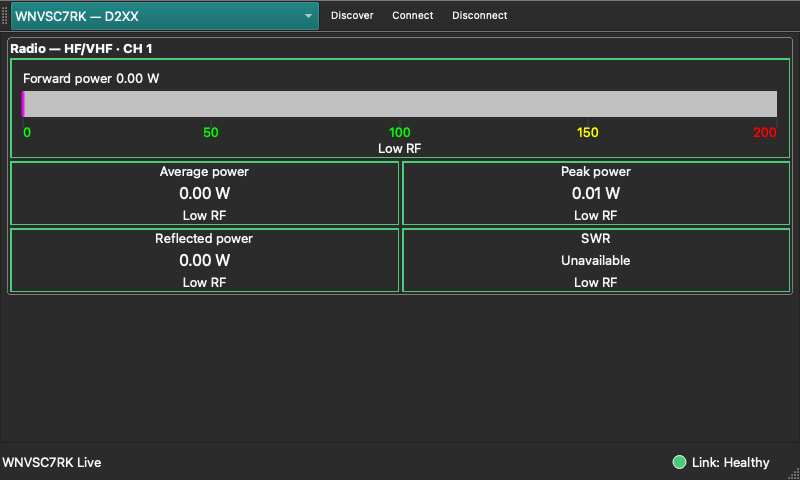

RayWn2App on macOS
Start with the installation package supplied with your WN-2 or downloaded from RF StateSide. Keep the instructions supplied with that package: its exact filename and setup prompts may differ between releases.
Install from the disk image
RayWn2App Alpha v0.0.1 has separate disk images for Apple Silicon and Intel. Both passed automated build and runtime checks on GitHub Actions macOS 15 runners. The Apple Silicon installer also passed hands-on testing on macOS 26.7.1.
On a fresh Intel macOS 15 test machine, we copied RayWn2App from the disk image to Applications, ejected the image, launched the installed app and opened the offline Help. The test used only the runtime bundled with the app. You can install and run RayWn2App without a Qt SDK or other development tools.
To identify your Mac, open the Apple menu → About This Mac. Choose the disk image for the chip or processor shown there:
- Apple M-series chip:
RayWn2App-0.0.1-Alpha-macOS-arm64.dmg - Intel processor:
RayWn2App-0.0.1-Alpha-macOS-x86_64.dmg
- In Finder, open Downloads and double-click the .dmg file for your Mac.
- Drag RayWn2App onto the Applications shortcut in the disk image window.
- When copying finishes, eject the disk image and open RayWn2App from Applications.
- Press F1 or use the Help menu to open the bundled guide.
This Alpha is ad-hoc signed for local testing. Apple Developer ID signing and notarization are pending. macOS may block the initial launch. Verify that the disk image came from RF StateSide before approving it.
Connect with D2XX
For a physical WN-2, download the macOS driver for your Mac from FTDI D2XX Drivers and follow the included setup instructions. The DMG installs RayWn2App. Set up the FTDI driver separately.
Connect the powered WN-2 by USB. Press Discover, choose the matching serial number with D2XX, then press Connect. The illustration shows the physical WN-2 connected through D2XX on an Apple silicon Mac. Close other applications using the meter first.
Use D2XX for the current macOS setup. VCP operation with the WN-2's USB identifier is not yet supported by the verified setup. Installing a generic serial driver does not necessarily make this meter appear as a serial port. Do not edit the meter's USB identity or disable macOS security to make VCP appear.
Using the Mac desktop
The application's menus appear in the macOS menu bar at the top of the screen. Saved layouts, instrument properties and Help operate in the same way as on the other platforms. Resize a detached meter to fit your screen, or return it to the dashboard.
Allow microphone access if you intend to record audio messages. Secure password storage uses your Mac keychain; complete its unlock or access prompt locally. Audio device names and shortcut availability can differ from Windows, so review the Audio Message Settings after moving a layout.

RayWn2App on macOS, receiving live measurements from physical WN-2 WNVSC7RK with RF off. Select image to enlarge.

Check your first readings
The status bar should show your meter Live and its link healthy. Load a supplied layout and bind its instruments to that same WN-2. With the transmitter in receive, near-zero power, Low RF and unavailable SWR are normal. They do not mean that the USB connection failed.
RF couplers are factory calibrated and do not require additional calibration. Optional user reference matching is available if you want readings to match another meter. See First station connection, Device Settings and Connection problems.